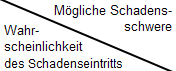

Die Maßnahmen in der vorliegenden Gefährdungsbeurteilung gehen
von einem allgemein akzeptierten Grenzrisiko aus. Dieses allgemein akzeptierte
Grenzrisiko ist in den Regeln festgeschrieben.
Wenn Sie die vorliegende Gefährdungsbeurteilung anwenden, können Sie davon ausgehen, dass Ihr
Restrisiko niedriger ist als das höchste akzeptierte Risiko. Damit haben Sie die geeigneten
Maßnahmen ausgewählt und sichere sowie gesundheitsgerechte Arbeitsbedingungen ermöglicht.
Wenn Sie das allgemein akzeptierten Grenzrisiko durch ein betriebsspezifisches Grenzrisiko
ersetzen wollen, dann müssen Sie selbst eine Risikoabschätzung vornehmen. Zur Ermittlung Ihres spezifischen Grenzrisikos
im Betrieb finden Sie hier ein Hilfsinstrument.
Schätzen Sie zu der betrachteten Tätigkeit anhand der folgenden Tabelle das in Ihrem Betrieb spezifische Risiko ab. Sie können das Ergebnis Ihrer Risikoeinschätzung in die Gefährdungsbeurteilung übernehmen. Klicken Sie dazu auf den Risikofaktor in der Tabelle:
|
 |
Leichte Verletzungen oder Erkrankungen | Mittelschwere Verletzungen oder Erkrankungen | Schwere Verletzungen oder Erkrankungen | Möglicher Tod, Katastrophe |
| Sehr gering | A | A | B | B |
| gering | A | B | B | C |
| mittel | B | B | C | C |
| hoch | B | C | C | C |
Lassen Sie sich gegebenenfalls von Ihrer Fachkraft für Arbeitssicherheit oder Ihrem Sicherheitstechnischen Dienst beraten.
Glossar Þ